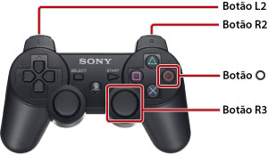

Como utilizar este manual
Este manual contém informações detalhadas relacionadas com o uso do software de sistema da PS3™. Para informações sobre as funções do hardware e a segurança do produto, consulte a documentação fornecida com o sistema.
Notas sobre como visualizar o manual
É aconselhável que o manual seja visualizado nas seguintes condições:
- Active o JavaScript no seu navegador. Se o JavaScript estiver desactivado para o navegador que está a utilizar, o manual pode não ser apresentado correctamente ou pode não ser apresentado de todo.
- Para visualizar o manual num PC, use o Microsoft Internet Explorer 6.0 ou superior.
Navegar pelo manual usando o sistema PS3™
Use as funções básicas descritas em baixo quando estiver a visualizar o manual a partir do  (Navegador de Internet) do sistema PS3™.
(Navegador de Internet) do sistema PS3™.
| Botões de direcção | Mover o cursor para um link. |
|---|---|
Botão  |
Abrir o link. |
| Manípulo direito | Deslizar em qualquer direcção. |
| Botão L1 | Voltar à página anterior. |
Pode utilizar o seguinte método para fazer a apresentação com zoom.

| Prima o botão R3 (manípulo direito) | Utiliza a apresentação com zoom. / Cancela a apresentação com zoom. |
|---|---|
| Mantenha o botão L2 / R2 premido durante o zoom | Ampliar apresentação. / Reduzir apresentação. |
Mantenha o botão  durante o zoom durante o zoom |
Cancela a apresentação com zoom. |
Explicação das referências a botões neste manual
Os botões do sistema PS3™ usados para confirmar e cancelar itens variam consoante a região e o produto. Por regra, as versões em inglês e noutras línguas europeias deste manual usam para confirmar um item e para cancelar, enquanto que as versões noutras línguas usam para confirmar e para cancelar.
Imprimir o manual
Pode imprimir o manual usando um PC. Se seguir os passos descritos em baixo pode imprimir várias páginas de uma só vez.
1. |
Use o Microsoft Windows Internet Explorer para apresentar o [Índice do Manual] deste manual. |
|---|---|
2. |
No menu Ficheiro, do Internet Explorer, seleccione [Imprimir]. |
3. |
Seleccione o separador [Opções] e, em seguida, seleccione a caixa de verificação [Imprimir todos os documentos], para imprimir o manual. |